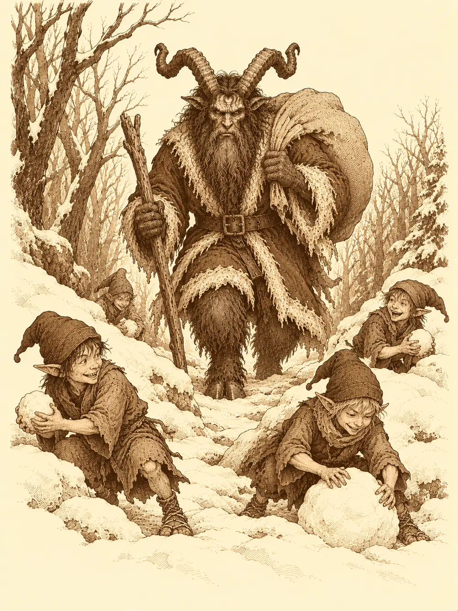

Capítulo 77
Una Navidad en Ukio
Libro V · Los guardianes del Norte y del Sur
Aquel invierno nevó en Ukio. La nieve cubría los tejados, los huertos y el camino del bosque, y por la mañana el pueblo entero crujía bajo los pies y olía a leña y a caldo. Los niños tiraban bolas contra la puerta de la herrería y el herrero fingía enfadarse.
Shigeru había pasado los últimos días yendo de un lado a otro con una idea fija. Después de dos ataques contra la base, los cazadores habían hablado de qué hacer y la mayoría se había inclinado por el dojo: era lo más rápido de levantar, mucho más que un muro alrededor del pueblo, y serviría para disimular una base nueva debajo. El monje quería construirlo él mismo, así que se plantó en la casita donde se vendían las licencias de oficio dispuesto a hacerse albañil.
En Ukio no había licencias de albañil. Shigeru se rascó la cabeza, miró la lista y acabó escogiendo la de peletero, porque para un dojo también hacían falta cueros. Con el dinero de Katari pagó las doscientas cincuenta monedas que costaba, y salió con sus herramientas nuevas envueltas en un paño, más contento que si le hubieran regalado un dojo hecho.
El conductor de la caravana también buscaba oficio. Había cambiado mucho en las últimas semanas. Unos ronin lo asaltaron en el camino, y lo salvó un monje calvo que lo llevó a su templo; allí pasó una o dos semanas aprendiendo cómo vivían, y desde entonces le daba vueltas a la idea de poner su habilidad al servicio de algo más grande. Lo que se le daba bien era cazar patos, jabalíes y cualquier pieza que se dejara, y la licencia de desollador le venía como anillo al dedo, pero era cara. Ermitaño, que había tenido suerte últimamente, le prestó doscientas monedas sin hacerle firmar nada.
"Ya me lo devolverás cuando puedas".
El conductor añadió cincuenta de su bolsa, recogió unas herramientas y un permiso sellado por el shogun para desollar animales y vender sus pieles, y se lo enseñó a Shigeru con orgullo.
"Si encontramos algún bicho muerto, yo lo desuello y tú trabajas la piel".
Katari, mientras tanto, recorrió las tiendas con la idea de protegerse mejor y volvió con una cota de malla ligera y un escudo, los dos con un brillo tenue que no tenían las piezas corrientes. Ermitaño compró carbón y pieles para la forja. Shigeru salió al bosque, cazó una pieza y se la llevó al pescador de Ukio, que llevaba tiempo dando a los cazadores parte de lo que ganaba; aquel día, por su parte, le perdonó lo que le correspondía. El pescador no supo qué decir.
Se juntaron en la taberna de Kitaro, se sacudieron la nieve de los hombros y bajaron a la base.
Abajo, la puerta corredera de papel los miró con todos sus ojos al abrirse. El conductor, que no la había visto nunca, dio un paso atrás. Katari pasó como si nada. Más adentro, el inugami los saludó desde su rincón y les dijo que Shizuka estaba dentro, haciendo no sabía qué.
Lo que estaba haciendo era la Navidad. La base entera había cambiado. En la sala principal había un árbol cargado de bolas de colores, las sillas parecían hechas de caramelo, había guirnaldas, dulces y bandejas de galletas en todas las mesas, y en medio de todo, Shizuka, con las mejillas rojas y las manos llenas de azúcar.
"Pensaba que llegaríais antes. Es la mejor noche del año".
Katari no tenía la menor idea de qué era la Navidad. La niña se lo explicó con mucha paciencia: un hombre gordo, vestido de rojo, con barba blanca, entraba de noche en las casas de los niños que se habían portado bien y les dejaba regalos debajo del árbol.
"¿Un ninja gordo, rojo y barbudo que te trae regalos una vez al año?", preguntó Katari.
"Yo lo he visto. En sueños. Me dijo cómo hacer las galletas".
Le dio una a cada uno. Katari mordió la suya, Ermitaño también, y de pronto la druida se encontró mirando el mundo desde muy arriba, con unas manos enormes y peludas, mientras su propio cuerpo, a un par de pasos, se tocaba la cara con espanto. Shizuka se partía de risa.
"¡Os habéis cambiado el cuerpo!".
Ninguno de los dos supo cómo deshacerlo. Shigeru quiso saber de dónde había sacado la receta. Del hombre de los sueños, insistió la niña, que iba acompañado de unos hombrecillos muy delgados que jugaban con bolas de nieve; ellos le habían dicho que pusiera el árbol, le habían dado las sillas, la receta, todo. Y había otro, un señor muy feo, peludo, con cuernos.
El conductor se quedó helado. En su tierra, o en un lugar más allá de su tierra, había una leyenda sobre un ser así, una criatura de la Navidad que era mala. Krampus, lo llamaban.
"Eso es mentira", protestó Shizuka. "Era Papá Noel".
Katari, todavía en el cuerpo de Ermitaño, se acercó al árbol con desconfianza para examinarlo y no sacó nada en claro. Shizuka, que no veía ningún problema, alargó la mano y tocó una de las bolas. Sonó un tintineo de campana.
Y la niña desapareció.
Katari tocó la misma bola sin pensarlo un instante, y desapareció también. Los otros dos se miraron y fueron detrás.
Hacía frío de verdad. Estaban de pie alrededor de un árbol en medio de un paisaje nevado, bajo un cielo blanco, y cuando miraron al suelo vieron que no pisaban piedras. Pisaban calaveras. Había cientos, medio enterradas en la nieve.
Lo primero que hizo Katari fue correr hacia Shizuka. La niña estaba bien. Miraba alrededor encantada.
"¡Qué sitio más bonito!".
"Está lleno de esqueletos", le dijo la druida.
Al menos ella y Ermitaño volvían a estar cada uno en su cuerpo. No se trataba de un sueño: estaban allí, con los pies helados y el aliento saliendo en nubes.
Entre los árboles empezaron a moverse cosas. Se oía la nieve caer de las ramas, aquí y allá, como si algo pequeño saltara de una a otra. Katari preguntó en voz alta quién estaba ahí, en varias lenguas, por si era alguien herido. Shigeru desenrolló la cadena. Ermitaño los rodeó a todos con una plegaria de esperanza.
De los árboles salieron unos elfos diminutos y flacos, vestidos de colores, con sonrisas demasiado anchas y una risa aguda que no se callaba. Cogían nieve del suelo y la apretaban entre las manos. Detrás de ellos, cada vez más cerca, venía una criatura enorme, peluda, con cuernos retorcidos de macho cabrío y un traje rojo.

"¿Este es tu Papá Noel?", le preguntó Shigeru a la niña.
"Eso es una cabra con un traje rojo".
Katari tendió un hilo mental hacia uno de los elfos, por si podía hablar con él. En cuanto lo tocó, algo le estalló dentro de la cabeza, un dolor seco que la hizo tambalearse. El elfo siguió riéndose.
"Me habéis traído comida", dijo Krampus.
Los elfos atacaron con bolas de nieve que dolían como piedras y con cuchillos diminutos que sacaban de las mangas. Shizuka miró al que tenía más cerca, comentó lo raros que eran, levantó la mano y le lanzó una chispa de fuego que lo dejó reducido a ceniza humeante.
"Uy. Me he pasado".
"Bien hecho", le dijo Katari.
El conductor desenvainó su estoque y le arrancó un brazo a otro elfo, que siguió riéndose mientras sangraba. Shigeru los fue derribando con la cadena. Ermitaño lanzó una lanza de luz contra Krampus y uno de aquellos elfos se tiró delante para recibirla, como un guardaespaldas suicida; los ayudantes se interponían una y otra vez entre su amo y los golpes.
Krampus levantó una mano y uno de los regalos que había por el suelo estalló junto a Shigeru. El monje se apartó a tiempo de lo peor, y el elfo que tenía al lado voló por los aires. Katari llamó a los espíritus y una llama danzante empezó a quemar a quien se acercara.
Entonces Krampus se rio. Era una risa espantosa, grave, que se metía por los oídos y llegaba hasta los huesos. Shigeru, el conductor y Ermitaño sintieron un miedo que no habían sentido nunca y echaron a correr. El conductor disparaba hacia atrás mientras huía, sin acertar casi nada. Ermitaño huía lanzando destellos de luz por encima del hombro. Shigeru corrió unos pasos, se detuvo, respiró, buscó dentro de sí la disciplina que le habían enseñado, y el miedo se le deshizo.
"Yo no me asusto tan fácilmente", dijo, y volvió.
Katari se había quedado sola delante de la bestia. Krampus sacó un palo y un saco enorme y la atacó con los dos: la golpeó, intentó meterla en el saco, volvió a intentarlo, y la druida se escurrió cada vez. Le prendió fuego, invocó dos osos enormes que se lanzaron sobre la criatura gruñendo y levantó un tótem de espíritus que curaba a los suyos.
Shizuka, mientras tanto, peleaba como si no hubiera hecho otra cosa en su vida. Tocó al conductor y este empezó a moverse con una rapidez imposible. Sacó un arco y disparó. Lanzó un rayo. Luego miró a sus compañeros con los brazos cruzados: Katari no lo estaba haciendo mal, pero los otros salían corriendo y volvían, salían corriendo y volvían. Levantó la mano, que se le tiñó de morado.
"Esto me lo enseñó Sirth".
No pasó nada. La niña se encogió de hombros y volvió al arco.
Al final fue Ermitaño quien dejó de huir y volvió a ponerse junto a Katari para protegerla. Había plantado a su lado un arma espiritual hecha de luz, y la mandó contra Krampus. El golpe fue el último. La criatura, medio chamuscada por el fuego de Katari, se derrumbó en la nieve y ya no se levantó.
El conductor se acercó al cuerpo con su cuchillo nuevo, decidido a estrenar el oficio. Sacó un buen trozo de piel y unos pedazos de carne, y le pasó la piel a Shigeru.
"Para ti".
Alguien quiso llevarse el saco, pero en cuanto lo tocó empezó a ennegrecerse, y los regalos que quedaban se pudrieron dentro como fruta vieja. Otro intentó arrancarle un cuerno a la bestia como trofeo y se pinchó la mano con las astillas; lo dejaron estar.
Shizuka los miró uno por uno con los brazos en jarras. Como era la jefa de los cazadores, se sentía en la obligación de decirles que tenían que estar más centrados. Katari no había estado mal. Los otros, en cambio, se asustaban enseguida.
"Yo no creía que existieran estas criaturas", se disculpó el conductor. "En mi tierra las temían porque eran terribles, pero nunca pensé que me fuera a pelear con una".
"No te preocupes", dijo la niña, dándole unas palmaditas en la pierna. "Yo te protegeré".
Para volver bastaba con tocar las bolas del árbol. Antes de hacerlo, Shizuka cogió a uno de los elfos muertos por el pie y se lo llevó a rastras.
Aparecieron en la base con el cadáver en medio de la alfombra. Shizuka miró a Ermitaño con una determinación que no admitía réplica: quería que lo reviviera. Cuando el clérigo buscó con la mirada a Katari, la niña le tiró de la manga: no tenía que mirar a nadie, la jefa era ella. Nadie lo veía nada claro, y antes de que hiciera nada alguien ató al elfo con una cuerda, bien prieto.
Ermitaño le devolvió la vida. El elfo abrió los ojos, se miró las cuerdas y luego miró a la niña.
"Hola, elfo", le dijo Shizuka. "Ahora yo soy tu jefa. Te vas a llamar Rodolfo, porque hay un reno que se llama Rodolfo. Ven, que te voy a presentar a mis amigos de aquí abajo".
Y se lo llevó tirando de la cuerda.
Lor Miau, que dormitaba en una silla, abrió un ojo cuando le contaron contra quién habían luchado.
"Ah, sí. La cabra esa. Una vez vino a intentar quitarme el pescado y casi la mato".
"Pues ahora la hemos matado nosotros".
"No te preocupes", dijo el gato, estirándose. "Vuelve cada Navidad".
Se miraron unos a otros. ¿Había alguna manera de evitarlo? La había, dijo Lor Miau: no celebrar la Navidad. Nadie se ofreció a explicárselo a Shizuka.
Katari se acordó entonces de Sirth y fue hacia su habitación por costumbre, antes de recordar que el clérigo seguía enfermo en Sho. Ermitaño, en cambio, fue a ver al bebé. Llevaba mucho tiempo sin crecer, y el clérigo se inclinó sobre la cuna buscando alguna magia, alguna maldición, algo que explicara por qué el niño seguía igual. No encontró respuesta. Se quedó un rato mirándolo, con una mano apoyada en el borde.
El conductor acabó sentado junto a Mosto, el tanuki, que tenía una botella de sake casi tan grande como él.
"¿Quieres?".
"Trae para acá".
Desde la sala de al lado llegaba la voz de Shizuka presentándole a Rodolfo a sus amigos de la base, y la risa aguda del elfo, que no se callaba.